SAÉ S1.04 : Compte rendu
Interrogation de la base de données de Kdou
Groupe 107
KDou est une entreprise qui vend à ses clients français des produits d'épicerie fine achetés auprès de fournisseurs du monde entier. Elle s'interroge sur sa rentabilité et souhaite renforcer son image éco-responsable.
Ce compte rendu présente notre étude de sa base de données.
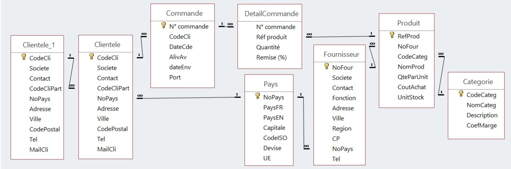
Q1 – Première exploration des données
a. On veut vérifier les coordonnées des clients parisiens : liste triée par société.
SELECT CodeCli, Societe, Adresse, CodePostal, Tel, MailCli, Ville
FROM Clientele
WHERE Ville = "Paris"
ORDER BY Societe;
Explication :
Cette requête sert à vérifier que les coordonnées des clients parisiens (adresse, code postal, téléphone, mail) sont complètes et exploitables pour organiser les livraisons. On filtre sur la ville « Paris » et on trie par société pour repérer facilement chaque client.
Erreurs :
On peut signaler que le client « Le Gourmet » est enregistré à Paris avec le code postal 76001, qui ne correspond pas à Paris. Il a également le même mail que « La Parisienne » (contact@parisienne.fr).
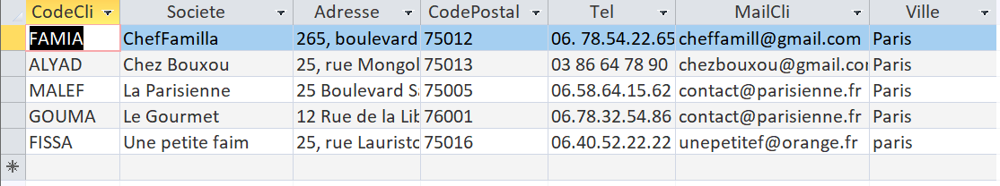
b. Quels sont les produits de provenance des Etats-Unis avec un cout de moins de 25€ ? On veut les connaître noms et prix, nom du fournisseur et ville.
SELECT Produit.Nomprod, Produit.CoutAchat, Fournisseur.Societe, Fournisseur.Ville
FROM (Produit INNER JOIN Fournisseur ON Produit.Nofour = Fournisseur.Nofour)
INNER JOIN Pays ON Fournisseur.NoPays = Pays.NoPays
WHERE Pays.PaysFR = "Etats-Unis" AND Produit.CoutAchat < 25;
Explication :
Cette requête repère les produits américains les moins chers à l'achat, donc ceux dont la marge potentielle est la plus intéressante, avec leur fournisseur et sa ville.
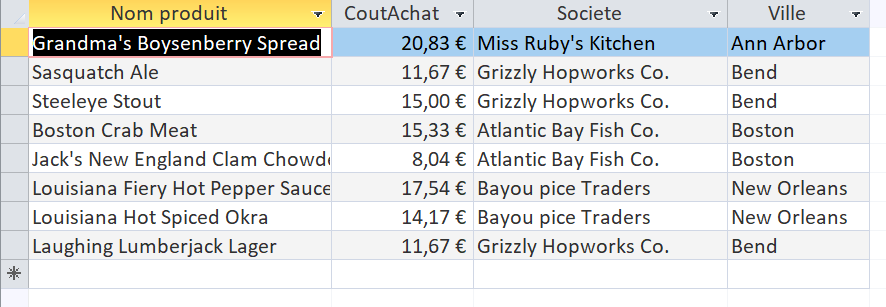
c. Quels sont les produits (avec fournisseur et pays de provenance) de catégorie viandes ou poissons ayant un coût d’achat de plus de 50€ ?
SELECT Produit.Nomprod, Fournisseur.Societe, Pays.PaysFR
FROM ((Produit INNER JOIN Fournisseur ON Produit.Nofour = Fournisseur.Nofour)
INNER JOIN Pays ON Fournisseur.NoPays = Pays.NoPays)
INNER JOIN Categorie ON Produit.CodeCateg = Categorie.CodeCateg
WHERE Categorie.NomCateg In ("Viandes","Poissons et fruits de mer") And Produit.CoutAchat>50;
Explication :
Cette requête isole les produits des catégories « Viandes » et « Poissons et fruits de mer » dont le coût d'achat dépasse 50 €, avec leur fournisseur et leur pays de provenance. Étant donné la provenance de ces produits et de leur coût d'importation, cette requête permet d'avoir des pistes de renégociation ou de relocalisation.
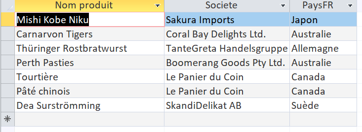
d. Quels fournisseurs proposent de la viande ou du poisson ?
SELECT DISTINCT Fournisseur.Societe, Categorie.NomCateg, Fournisseur.Societe, Categorie.NomCateg
FROM Categorie INNER JOIN
(Fournisseur INNER JOIN Produit ON Fournisseur.NoFour = Produit.NoFour)
ON Categorie.CodeCateg = Produit.CodeCateg
WHERE(((Categorie.NomCateg) = "Viandes"))
OR (((Categorie.NomCateg) = "Poissons et fruits de mer"));
Explication :
Cette requête liste les fournisseurs proposant de la viande ou du poisson. Cela pourrait être utile afin de savoir avec quel fournisseur prendre contact pour acheter de nouveau produit dans ces catégories ou chercher des alternatives plus responsables.
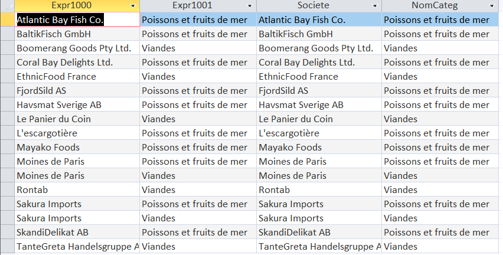
e. Quels fournisseurs proposent de la viande et du poisson ?
Requête enregistrée sous le nom Req_viandes :
SELECT DISTINCT
Fournisseur.Societe,
Categorie.NomCateg
FROM
Categorie
INNER JOIN (
Fournisseur
INNER JOIN Produit ON Fournisseur.NoFour = Produit.NoFour
) ON Categorie.CodeCateg = Produit.CodeCateg
WHERE
(((Categorie.NomCateg) = "Viandes"));
Requête enregistrée sous le nom Req_poissons_et_fruits_de_mer :
SELECT DISTINCT
Fournisseur.Societe,
Categorie.NomCateg
FROM
Fournisseur
INNER JOIN (
Categorie
INNER JOIN Produit ON Categorie.CodeCateg = Produit.CodeCateg
) ON Fournisseur.NoFour = Produit.NoFour
WHERE
(((Categorie.NomCateg) = "Poissons et fruits de mer"));
Requête finale :
SELECT
Req_viandes.Societe
FROM
Req_viandes
INNER JOIN Req_poissons_et_fruits_de_mer ON Req_viandes.Societe = Req_poissons_et_fruits_de_mer.Societe;
Explication :
Cette requête liste les fournisseurs vendant de la viande et le poisson en même temps. Cela permet de repérer les fournisseurs polyvalents, utiles pour regrouper les commandes et limiter les transports.
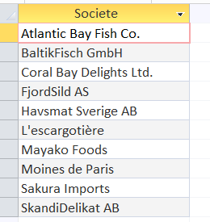
f. Quels sont les produits conditionnés dans du carton ou dans du verre ?
SELECT *
FROM Produit
WHERE QteParUnit LIKE '*carton*'
OR QteParUnit LIKE '*verre*';
Explication :
Cette requête cherche les mots « carton » et « verre » pour retrouver les produits concernés : 23 en carton et 3 en verre (aucun n'est dans les deux). Etant donné l'image que Kdou souhaitant renforcer son image éco-friendly, ce premier repérage permet de ressortir les éléments avec un emballage recyclable.
Erreurs :
On peut signaler que « Mascarpone Fabioli » est noté « 24 cartons (20200 g) », ce qui est probablement une faute de saisie (200 g).
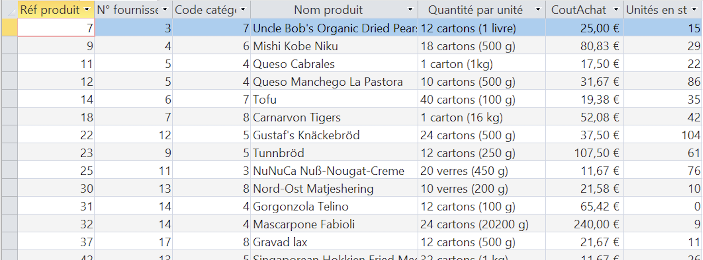
g. Donner les 3 dernières commandes du client Max Deschamps ?
SELECT TOP 3 *
FROM Commande INNER JOIN Clientele
ON Commande.CodeCli = Clientele.CodeCli
WHERE Clientele.Contact = 'Max Deschamps'
ORDER BY commande.DateCde DESC;
Explication :
Cette requête permet de suivre l'activité récente d'un client précis, potentiellement avant de le contacter ou de préparer une livraison, ici Max Deschamps (la société « L'Ancienne Auberge »).
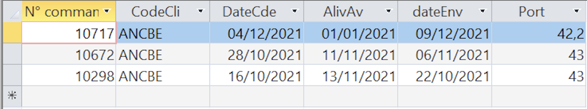
h. Quels fournisseurs ne proposent que des desserts ?
SELECT Fournisseur.Societe, Fournisseur.Contact, Fournisseur.Fonction, Fournisseur.Tel
FROM Categorie INNER JOIN (Fournisseur INNER JOIN Produit ON Fournisseur.NoFour = Produit.NoFour)
ON Categorie.CodeCateg = Produit.CodeCateg
GROUP BY Fournisseur.Societe, Fournisseur.Contact, Fournisseur.Fonction, Fournisseur.Tel
HAVING (((Min(Categorie.NomCateg))="Desserts") AND ((Max(Categorie.NomCateg))="Desserts"));
Explication :
Cette requête repère les fournisseurs spécialisés dans les desserts (4 sur 37), en l'occurrence KDou dépend entièrement d’une seule catégorie : si le dessert se vend moins, le risque est direct. C'est aussi utile pour négocier avec eux ou pour savoir où élargir l’offre.
Erreurs :
On peut signaler que 3 fournisseurs (Sabor do Sul Ltda., Pacific United Traders Ltd. et Ronde du lac) n’ont aucun produit au catalogue, donc ils n’apparaissent pas dans le résultat alors qu’ils existent dans la table. On peut aussi signaler que le produit « LimoCoca » existe en double avec deux fiches différentes, ce qui pourrait fausser la catégorie d’un fournisseur si l’une des deux fiches était mal classée.
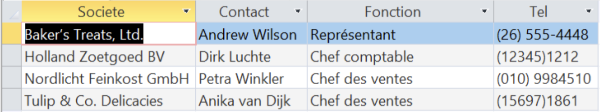
i. Quels fournisseurs hors France n’ont pas encore de produits au catalogue de Kdou ?
SELECT [Fournisseur].[Societe], [Fournisseur].[Contact], [Fournisseur].[Tel], [Pays].[PaysFR]
FROM (([Fournisseur] LEFT JOIN [Produit]
ON [Fournisseur].[NoFour] = [Produit].[NoFour]) INNER JOIN [Pays]
ON [Fournisseur].[NoPays] = [Pays].[NoPays])
WHERE [Fournisseur].[NoPays] NOT IN (SELECT [Fournisseur].[NoPays]
FROM [Fournisseur] INNER JOIN [Pays]
ON [Fournisseur].[NoPays] = [Pays].[NoPays]
WHERE [Pays].[PaysFR] IN ('France')) AND [Produit].[NoFour] IS NULL;
Explication :
Cette requête repère les fournisseurs étrangers qui existent dans la base et qui n'ont aucun produit dans leur catalogue. Cela permet de connaitre les collaborateurs ne proposant rien, par conséquent on peut soit les relancer, soit les retirer de la base de données.
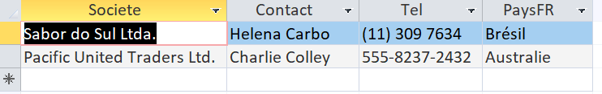
j. Pour optimiser les livraisons, on veut savoir quels couples de clients sont situés à Paris.
SELECT [C1].[Societe] AS [Societe_1], [C1].[CodeCli], [C2].[Societe] AS [Societe_2], [C2].[CodeCli]
FROM [Clientele] AS [C1], [Clientele] AS [C2]
WHERE [C1].[Ville] = "Paris"
AND [C2].[Ville] = "Paris"
AND [C2].[CodeCli] > [C1].[CodeCli]
ORDER BY [Societe_1], [Societe_2];
Explication :
Cette requête forme tous les couples de clients situés à Paris. Cela permet dans une démarche plus écologique de pouvoir livrer en même temps deux clients en un seul transport de marchandise.
Erreurs :
On peut signaler que le client « Le Gourmet » est enregistré à Paris avec le code postal 76001 : s'il n'est pas vraiment parisien, il n'y aurait que 6 couples au lieu de 10.
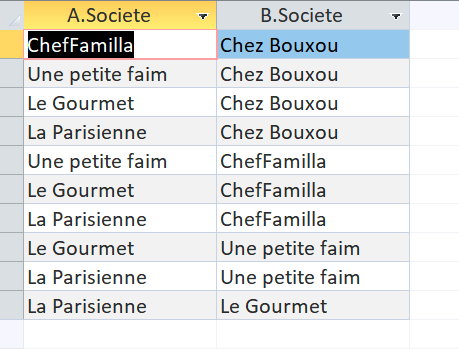
Q2 - Dans une réflexion en lien avec l’origine de ses produits :
On veut comme indicateur le CA total généré à ce jour avec les fournisseurs de l’UE ?
SELECT Sum([Quantité]*[CoutAchat]*[CoefMarge]*(1-[Remise (%)])) AS CA
FROM Pays INNER JOIN (Fournisseur INNER JOIN (Categorie INNER JOIN
(Produit INNER JOIN DetailCommande
ON Produit.RefProd = DetailCommande.[Réf produit]) ON Categorie.CodeCateg = Produit.CodeCateg)
ON Fournisseur.NoFour = Produit.NoFour) ON Pays.NoPays = Fournisseur.NoPays
WHERE (((Pays.UE)="Membre"));
Explication :
Cet indicateur mesure la part de l’activité qui vient de l’Union européenne. Plus elle est élevée, plus les produits voyagent sur de courtes distances (donc moins de transport et d’émissions). C’est un bon point de départ pour l’image éco-responsable. Il faudrait comparer ce chiffre au CA total pour avoir un pourcentage.
Erreurs :
On peut signaler que 7 lignes de commande semblent saisies en double (le même produit deux fois dans la même commande, avec la même quantité, par exemple la commande 11110 pour le produit 40), ce qui peut surestimer légèrement le CA. Ainsi que les données qui ne contiennent que trois années dont une seule complète, donc le total à ce jour couvre en réalité de fin juillet 2020 à novembre 2022.
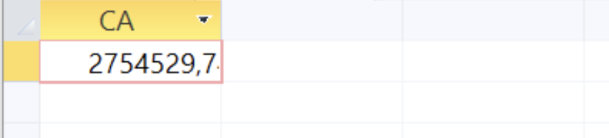
Q3 - Dans une réflexion en lien avec la santé :
On veut comme indicateur le chiffre d’affaire généré (montant total des ventes) annuel pour les catégories desserts ou boissons.
SELECT Categorie.NomCateg, Year([DateCde]) AS Année, Sum([Quantité]*[CoutAchat]*[CoefMarge]*(1-[Remise (%)])) AS CA
FROM Categorie INNER JOIN (Produit INNER JOIN
(Commande INNER JOIN DetailCommande ON Commande.[N° commande] = DetailCommande.[N° commande])
ON Produit.RefProd = DetailCommande.[Réf produit]) ON Categorie.CodeCateg = Produit.CodeCateg
GROUP BY Categorie.NomCateg, Year([DateCde])
HAVING (((Categorie.NomCateg)="Desserts")) OR (((Categorie.NomCateg)="Boissons"))
ORDER BY Year([DateCde]);
Explication :
Cette requête montre le poids de deux catégories liées à la santé (sucre) et son évolution dans le temps. Les boissons représentent environ le double des desserts, KDou peut alors s’en servir pour décider quoi promouvoir ou quoi remplacer par une offre plus saine.
Erreurs :
On peut signaler que les années ne sont pas comparables : 2020 commence seulement fin juillet, 2022 n’a que 5 commandes, et seule 2021 est complète. De plus, 16 commandes ont une date d’envoi antérieure à leur date de commande (par exemple commandée le 22/12/2021 mais envoyée le 13/01/2021), probablement une erreur d’année qui n'a pas d’effet sur le calcul pour autant, car on s’appuie sur la date de commande, mais ça montre que les dates ne sont pas fiables. On peut signaler aussi, les 7 lignes en double peuvent aussi gonfler un peu le CA.
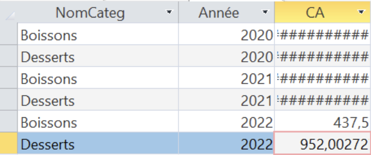
Q4 - Dans une réflexion en lien avec l’offre commerciale :
Calcul de l’indicateur nombre de produits carnés non commandés actuellement ?
SELECT COUNT([Produit].[NomProd]) AS [Nombres de produit]
FROM [DetailCommande]
RIGHT JOIN ([Categorie]
INNER JOIN [Produit]
ON [Categorie].[CodeCateg] = [Produit].[CodeCateg])
ON [DetailCommande].[Réf produit] = [Produit].[RefProd]
WHERE ([DetailCommande].[N° commande] IS NULL) AND ([Categorie].[CodeCateg] = 6)
Explication :
Cet indicateur compte les produits de viande qui n'ont jamais été commandés. Cela permet de savoir quels produits ne trouvent pas de public, c'est donc un indicateur pour l'entreprise. Elle pourra alors potentiellement décider de les retirer du catalogue, de les promouvoir, ou de revoir leur prix.
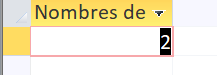
Q5 - Dans une réflexion sur le partenariat client :
A-t-on des clients pilotes d’un réseau partenaire ayant autant de commandes que les clients partenaires ?
SELECT CodeCli, COUNT([N° commande]) AS NbCmd
FROM Commande
GROUP BY CodeCLi;
SELECT A.CodeCli, CA.NbCmd, B.CodeCli, CB.NbCmd
FROM ((Clientele AS A INNER JOIN Clientele AS B ON A.CodeCliPart = B.CodeCLi)
INNER JOIN 5_NbCommandes AS CA ON CA.CodeCli = A.CodeCLi)
INNER JOIN 5_NbCommandes AS CB ON CB.CodeCli = B.CodeCli
WHERE CA.NbCmd = CB.NbCmd;
Explication :
Certains clients pilotent un réseau de clients partenaires pour des livraisons groupées. On compare ici le nombre de commandes d'un client partenaire à celui de son pilote. Cela permet à l'entreprise d'évaluer l'équilibre du réseau, de repérer les liens à retravailler et de savoir sur qui s'appuyer.
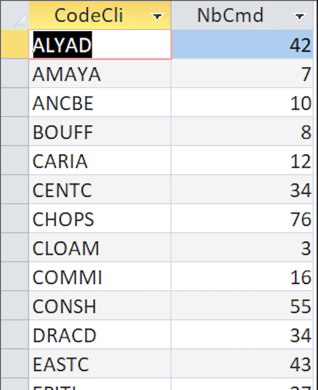
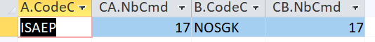
Propositions de requêtes :
1. Quel est le CA des fournisseurs de l’UE une fois supprimées les lignes de commande en double, et quel écart avec le CA brut ?
SELECT SUM(D.Quantité * P.CoutAchat * C.CoefMarge * (1 - D.[Remise (%)])) AS CA_UE_corrige
FROM (SELECT DISTINCT [N° commande], [Réf produit], Quantité, [Remise (%)]
FROM DetailCommande) AS D,
Produit AS P, Categorie AS C, Fournisseur AS F, Pays AS Y
WHERE D.[Réf produit] = P.RefProd
AND P.CodeCateg = C.CodeCateg
AND P.NoFour = F.NoFour
AND F.NoPays = Y.NoPays
AND Y.UE = 'Membre';
Explication :
Dans la Q2, il y a 7 lignes de commande en double (même commande, même produit, même quantité, même remise). Les retirer fait passer le CA UE de 2 754 530 € à 2 752 344 €, soit environ 2 186 € de moins. Cette requête fait donc office d'une vérification de fiabilité, pas une correction massive. Sur la requête 3, seules 3 lignes de desserts et de boissons sont concernées (commandes 11112, 11115 et 11110), donc l’effet est minuscule aussi. Même si on ne peut pas être sûr que ce soit des erreurs car un client a peut-être vraiment commandé deux fois le même produit.
Intérêt :
Un indicateur doit être fiable avant de guider une décision. Cette requête vérifie que les lignes saisies deux fois ne faussent pas le CA UE, et mesure l’écart. Elle améliore la qualité de l’indicateur d’origine de KDou.
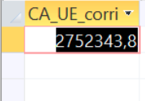
2. Quels sont les dix produits les plus vendus (en quantité) dont le fournisseur est situé hors de l’Union européenne, avec leur pays d’origine et leur prix de vente unitaire ?
SELECT TOP 10
Produit.NomProd,
Pays.PaysFR,
Produit.CoutAchat * Categorie.CoefMarge AS PrixVente,
SUM(DC.Quantité) AS QteVendue
FROM (((DetailCommande AS DC
INNER JOIN Produit ON DC.[Réf produit] = Produit.RefProd)
INNER JOIN Fournisseur ON Produit.NoFour = Fournisseur.NoFour)
INNER JOIN Pays ON Fournisseur.NoPays = Pays.NoPays)
INNER JOIN Categorie ON Produit.CodeCateg = Categorie.CodeCateg
WHERE Pays.UE = "Hors"
GROUP BY Produit.NomProd, Pays.PaysFR, Produit.CoutAchat, Categorie.CoefMarge
ORDER BY SUM(DC.Quantité) DESC;
Explication :
Les jointures relient chaque ligne de commande à son produit, à la catégorie (coefficient de marge) et au pays du fournisseur. Le filtre UE = « Hors » ne garde que les fournisseurs extérieurs à l’UE. Je mesure la popularité par la quantité vendue (SUM de Quantité), plus fidèle à la demande que le nombre de lignes de commande, et le prix par le prix de vente unitaire (coût d’achat × coefficient de marge), celui que paie le client. Le GROUP BY porte sur tous les champs non agrégés, puis ORDER BY ... DESC et TOP 10 donnent le classement.
Intérêt :
Plus de la moitié des quantités vendues par KDou proviennent de fournisseurs hors Union européenne. Identifier les dix produits hors UE les plus demandés, avec leur pays d’origine et leur prix de vente, permet à KDou de cibler les produits à relocaliser auprès de fournisseurs européens pour réduire l’empreinte transport.
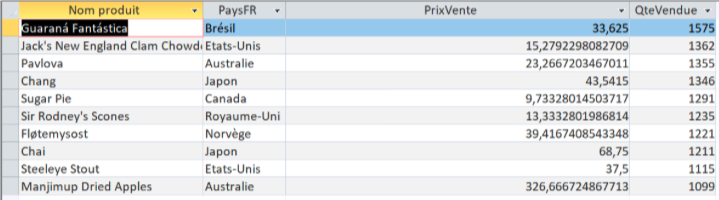
3. Quels sont les Boissons proposées par KDou ?
SELECT DISTINCT
Produit.NomProd,
Categorie.NomCateg
FROM Categorie
INNER JOIN Produit ON Categorie.CodeCateg = Produit.CodeCateg
WHERE (((Categorie.NomCateg) = "Boissons"));
Explication :
La requête relie les tables Produit et Categorie en associant chaque produit avec sa catégorie, ensuite on fait un trie pour ne garder que les Boisssons. Le DISTINCT évite les doublons.
Intérêt :
Les boissons sont la catégorie qui génère le plus de marge à KDou et elles sont liées à la santé. Cette liste donne l'inventaire de l'offre, première étape pour décider quelles boissons promouvoir, remplacer par des alternatives plus saines ou retirer du catalogue.
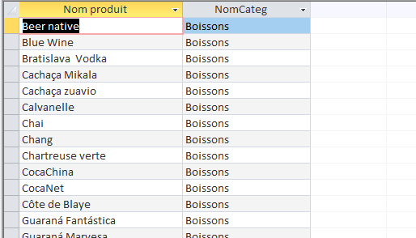
4. Quels sont les produits locaux, classés par ordre décroissant de rentabilité financière ?
SELECT Produit.NomProd, Fournisseur.Societe AS NomFournisseur, Categorie.NomCateg, (Produit.CoutAchat * Categorie.CoefMarge) AS PrixVente, (Produit.CoutAchat * Categorie.CoefMarge) - Produit.CoutAchat AS MargeNette
FROM ((Produit
INNER JOIN Fournisseur ON Produit.NoFour = Fournisseur.NoFour)
INNER JOIN Pays ON Fournisseur.NoPays = Pays.NoPays)
INNER JOIN Categorie ON Produit.CodeCateg = Categorie.CodeCateg
WHERE Pays.PaysFR = 'France'
ORDER BY ((Produit.CoutAchat * Categorie.CoefMarge) - Produit.CoutAchat) DESC;
Explication :
La requête effectue des jointures entre Produit, Fournisseur, Pays et Categorie via leurs clés primaires/étrangères. Elle filtre les résultats sur la France (WHERE). Le prix de vente est calculé selon la règle métier de KDou (coût d’achat * coefficient de marge). La marge nette est obtenue en soustrayant le coût d’achat, puis le résultat est trié par ordre décroissant (DESC).
Intérêt :
KDou souhaite renforcer son image d’entreprise éco-responsable tout en améliorant sa rentabilité. Promouvoir des produits locaux limite les émissions polluantes liées au transport intercontinental.
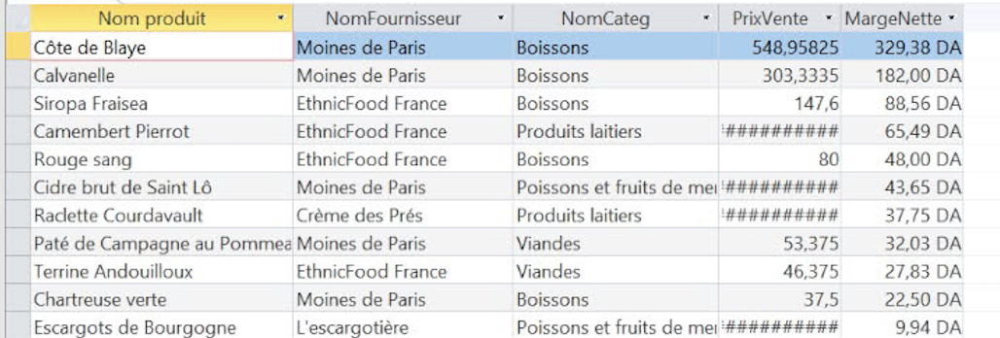
5. Quels sont les produits qui n'ont jamais été vendu ?
SELECT Produit.NomProd, Categorie.NomCateg, Produit.CoutAchat
FROM Produit INNER JOIN Categorie
ON Produit.CodeCateg = Categorie.CodeCateg
WHERE NOT EXISTS
(SELECT *
FROM DetailCommande
WHERE DetailCommande.[Réf produit] = Produit.RefProd)
ORDER BY Categorie.NomCateg, Produit.NomProd;
Explication :
La requête joins les produits et leurs catégories pour les affichées si il ne sont pas présent dans les commandes.
Intérêt :
Pour Kdou un invendu est de l'argent perdu, et pour l'environnement cela représentent du gachie alimentaire. Cette requête permet de visualiser les produits a potentiellement retirer.
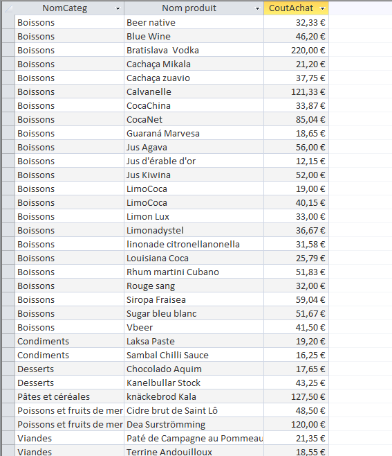